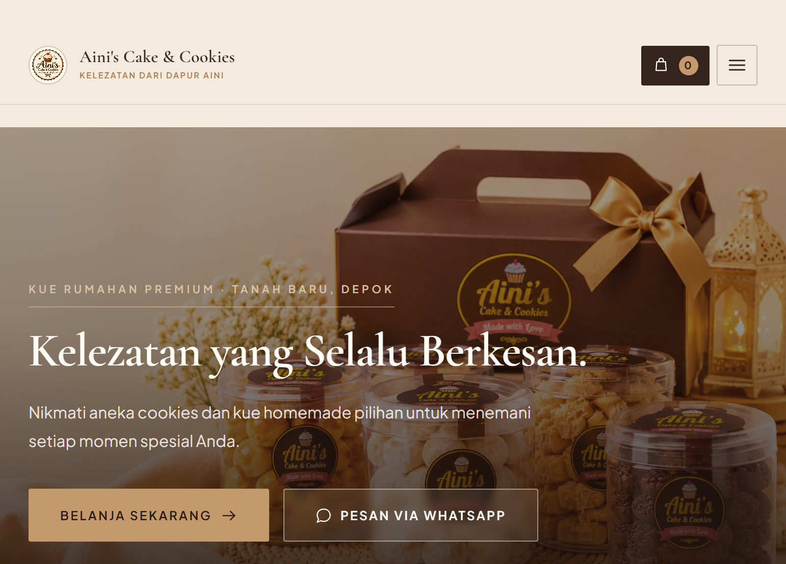
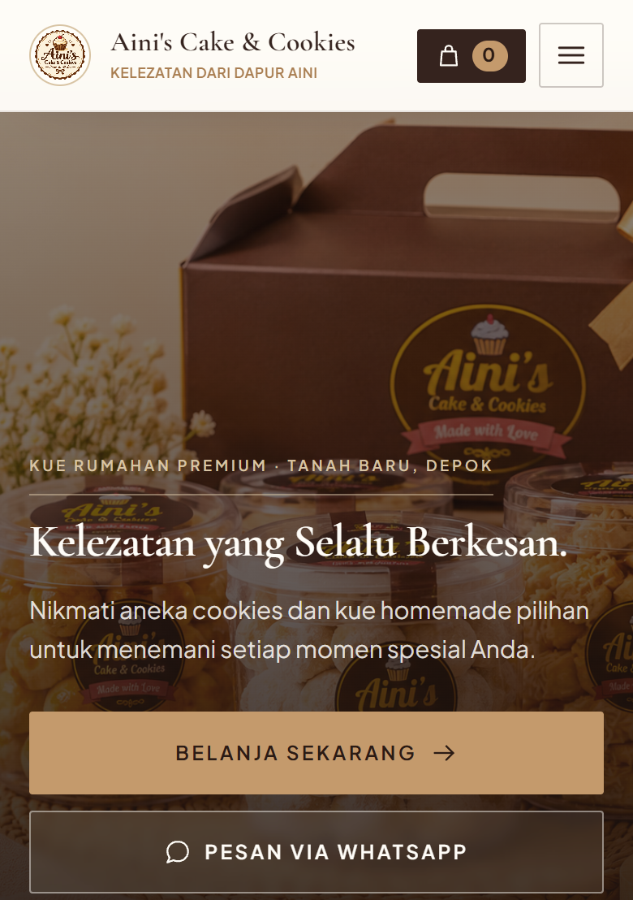
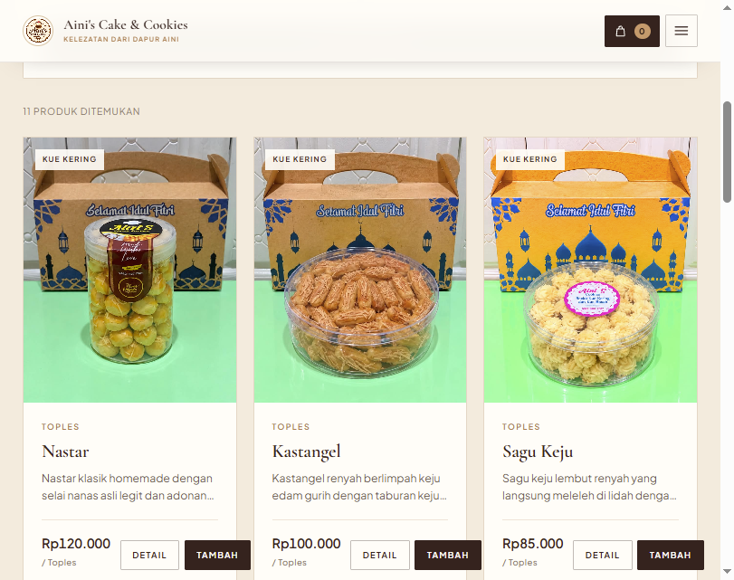
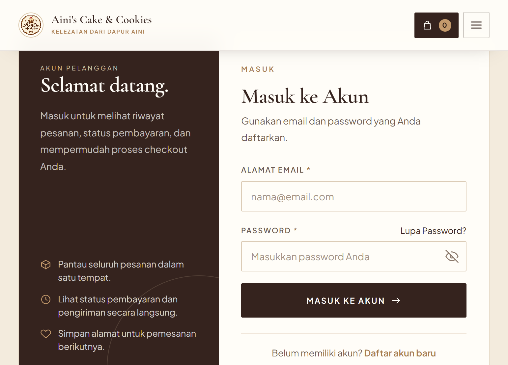

Aini's Cake & Cookies
Website toko kue online yang memudahkan pelanggan melihat produk, melakukan pemesanan, dan mengelola pengalaman berbelanja secara digital.


Katalog Produk
↗

Halaman Login
↗
